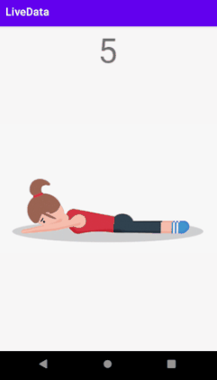

LiveData
LiveData es una clase para contener datos observables.
Está diseñada específicamente para ser utilizada en Activities, Fragments o Servicios, de forma
que únicamente notifica a los observadores si la Activity, Fragment o Servicio está en ejecución.
Android proporciona las clases LiveData y MutableLiveData que permiten almacenar
cualquier tipo de datos, y observar sus cambios.
Desarrollaremos una app que consiste en un Entrenador de gimnasia.

https://github.com/gerardfp/LiveData
Crea el proyecto
-
Selecciona Empty Activity como plantilla.
-
Añade las siguientes dependencias:
build.gradle (Module: app)
implementation 'androidx.lifecycle:lifecycle-viewmodel:2.2.0'
implementation 'androidx.lifecycle:lifecycle-livedata:2.2.0'
implementation 'androidx.navigation:navigation-fragment:2.3.0'
implementation 'androidx.navigation:navigation-ui:2.3.0'
implementation 'com.github.bumptech.glide:glide:4.11.0'
annotationProcessor 'com.github.bumptech.glide:compiler:4.11.0'
La librería Glide sirve para cargar imágenes
-
Activa el ViewBinding
build.gradle (Module: app)
android {
buildFeatures {
viewBinding true
}
}
-
Crea el Grafo de Navegación res/navigation/nav_graph.xml.
Añade el NavHostFragment al layout de la MainActivity:
res/layout/activity_main.xml
<?xml version="1.0" encoding="utf-8"?>
<androidx.constraintlayout.widget.ConstraintLayout xmlns:android="http://schemas.android.com/apk/res/android"
android:layout_width="match_parent"
android:layout_height="match_parent"
xmlns:app="http://schemas.android.com/apk/res-auto">
<androidx.fragment.app.FragmentContainerView
android:name="androidx.navigation.fragment.NavHostFragment"
android:id="@+id/nav_host_fragment"
android:layout_width="match_parent"
android:layout_height="match_parent"
app:defaultNavHost="true"
app:navGraph="@navigation/nav_graph" />
</androidx.constraintlayout.widget.ConstraintLayout>
-
Crea un destino en el nav_graph.xmlllamado EntrenadorFragment:
Configura el ViewBinding:
EntrenadorFragment.java
import android.os.Bundle;
import android.view.LayoutInflater;
import android.view.View;
import android.view.ViewGroup;
import androidx.annotation.NonNull;
import androidx.fragment.app.Fragment;
public class EntrenadorFragment extends Fragment {
private FragmentEntrenadorBinding binding;
@Override
public View onCreateView(@NonNull LayoutInflater inflater, ViewGroup container, Bundle savedInstanceState) {
return (binding = FragmentEntrenadorBinding.inflate(inflater, container, false)).getRoot();
}
@Override
public void onViewCreated(@NonNull View view, @Nullable Bundle savedInstanceState) {
super.onViewCreated(view, savedInstanceState);
}
}
Añade las siguientes View al layout:
res/layout/fragment_entrenador.xml
<?xml version="1.0" encoding="utf-8"?>
<FrameLayout xmlns:android="http://schemas.android.com/apk/res/android"
xmlns:tools="http://schemas.android.com/tools"
android:layout_width="match_parent"
android:layout_height="match_parent"
tools:context=".EntrenadorFragment">
<ImageView
android:id="@+id/ejercicio"
android:layout_width="match_parent"
android:layout_height="match_parent" />
<TextView
android:id="@+id/repeticion"
android:layout_width="match_parent"
android:layout_height="wrap_content"
android:gravity="center"
android:textSize="48sp"/>
<TextView
android:id="@+id/cambio"
android:layout_width="match_parent"
android:layout_height="match_parent"
android:background="#ddee44"
android:textColor="@color/white"
android:visibility="gone"
android:text="CAMBIO"
android:gravity="center"
android:textSize="48sp"/>
</FrameLayout>
- Necesitarás descargar los gifs de los ejercicios y arrastrarlos a la carpeta res/drawable.
Entrenador
La siguiente clase implementa el Entrenador. Su función es dar órdenes, que consisten en qué ejercicio
hay que hacer y el número de repetición. Cuando el número de repetición llega a 0, avisa del cambio y cambia de
ejercicio.
Entrenador.java
import java.util.Random;
import java.util.concurrent.Executors;
import java.util.concurrent.ScheduledExecutorService;
import java.util.concurrent.ScheduledFuture;
import static java.util.concurrent.TimeUnit.SECONDS;
public class Entrenador {
interface EntrenadorListener {
void cuandoDeLaOrden(String orden);
}
Random random = new Random();
ScheduledExecutorService scheduler = Executors.newScheduledThreadPool(1);
ScheduledFuture<?> entrenando;
void iniciarEntrenamiento(EntrenadorListener entrenadorListener) {
if (entrenando == null || entrenando.isCancelled()) {
entrenando = scheduler.scheduleAtFixedRate(new Runnable() {
int ejercicio;
int repeticiones = -1;
@Override
public void run() {
if (repeticiones < 0) {
repeticiones = random.nextInt(3) + 3;
ejercicio = random.nextInt(5)+1;
}
entrenadorListener.cuandoDeLaOrden("EJERCICIO" + ejercicio + ":" + (repeticiones == 0 ? "CAMBIO" : repeticiones));
repeticiones--;
}
}, 0, 1, SECONDS);
}
}
void pararEntrenamiento() {
if (entrenando != null) {
entrenando.cancel(true);
}
}
}
La clase ScheduledExecutorService contiene el método scheduleAtFixedRate(), que permite ejecutar
una tarea en segundo plano cada cierto tiempo predefinido.
En este caso, ejecuta el método que da la orden de entrenamiento cada segundo.
Una aplicación de consola típica que utiliza la clase Entrenador se puede implementar de la siguiente forma.
Observa que cuando se llama al método iniciarEjercicios() se le pasa el callback, mediante el cual
el entrenador responderá con las órdenes.
import java.util.Scanner;
public class Main {
public static void main(String[] args) {
Entrenador entrenador = new Entrenador();
Scanner scanner = new Scanner(System.in);
while(true){
if(scanner.nextLine().equals("i")){
System.out.println("Iniciando entrenador...");
entrenador.iniciarEjercicios(new Entrenador.EntrenadorListener() {
@Override
public void cuandoDeLaOrden(String orden) {
System.out.println(orden);
}
});
} else {
System.out.println("Parando entrenador...");
entrenador.pararEjercicios();
}
}
}
}
Si ejecutamos el programa e iniciamos el entrenador, éste empezará a dar órdenes:
iniciar
Iniciando entrenador...
EJERCICIO2:3
EJERCICIO2:2
EJERCICIO2:1
EJERCICIO2:CAMBIO
EJERCICIO1:3
EJERCICIO1:2
EJERCICIO1:1
EJERCICIO1:CAMBIO
EJERCICIO4:3
EJERCICIO4:2
EJERCICIO4:1
EJERCICIO4:CAMBIO
EJERCICIO3:6
EJERCICIO3:5
EJERCICIO3:4
parar
Parando entenador...
LiveData
Hay dos formas de utilitzar LiveData: instanciando la clase MutableLiveData o extendiendo la clase LiveData.
MutableLiveData
Para instanciar un objeto de clase MutableLiveData, hay que poner en el diamante <>el tipo
de datos que va a almacenar. Por ejemplo para crear un MutableLiveData de tipo Integer:
MutableLiveData<Integer> numeroEnteroLiveData = new MutableLiveData<>();
En el constructor se le puede pasar el valor inicial que tendrá el dato:
MutableLiveData<Integer> numeroEnteroLiveData = new MutableLiveData<>(2400);
Para cambiar el valor que contiene un MutableLiveData, se proporcionan dos métodos:
numeroEnteroLiveData.setValue(-500); // solo se puede hacer desde el main thread
numeroEnteroLiveData.postValue(7802);
Los dos métodos causan que se notifique a los observadores del cambio de valor.
Para observar un objeto LiveData o MutableLiveData se debe llamar al método observe().
A este método hay que pasarle la Activity o el Fragment desde los cuales se observa, y el callback Observer
al cual se llamará para notificar los cambios del valor. Las notificaciones de los cambios de valor,
únicamente se realizarán si la Activity o el Fragment están en ejecución.
Para obtener el Fragment o Activity y poder pasárselo al método observe(), se puede utilizar el método
getViewLifecycleOwner().
El siguiente código ilustra cómo se empieza a observar un objeto LiveData:
numeroEnteroLiveData.observe(getViewLifecycleOwner(), new Observer<Integer>(){
@Override
public void onChangd(@Nullable Integer valor){
// actualizar la UI con el nuevo valor
}
});
LiveData
En el caso de un objeto MutableLiveData es una entidad externa la que llama a los
métodos setValue() o postValue() para cambiar el valor.
Es posible extender la clase LiveData para hacer que sea el propio objeto el que cambie su valor.
Cuando se extiende la clase LiveData hay dos métodos que hay que anular:
El método setValue() actualiza el valor y notifica a los observadores activos.
Conclusión
Para cambiar el valor de un MutableLiveData hay que llamar al método setValue() o postValue(),
desde una entidad externa.
Para cambiar el valor de un LiveData es el propio LiveData el que llama al método setValue() o postValue().

Implementación LiveData
En el caso de la clase Entrendador, es muy útil extender la clase LiveData. Ya que
de esta forma será el propio Entenador el que vaya cambiando de ejercicio por su cuenta sin que
nadie deba indicárselo.
En la actividad anterior, hicimos que el Model calculase la cuota cuando
se pulsaba al botón. En cambio ahora, el entrenador irá cambiando de ejercicio sin que nadie se lo ordene.
Es importante comprender que el entrenador solo debe ir emitiendo ejercicios si hay algún observador activo,
es decir, si el fragment está en ejecución.
La implementación del LiveData quedaría así:
Entenador.java
LiveData<String> ordenLiveData = new LiveData<String>() {
@Override
protected void onActive() {
super.onActive();
iniciarEntrenamiento(new EntrenadorListener() {
@Override
public void cuandoDeLaOrden(String orden) {
postValue(orden);
}
});
}
@Override
protected void onInactive() {
super.onInactive();
pararEntrenamiento();
}
};
Ahora, en el momento en que haya algún observador de la variable ordenLiveData, se llamará al método
onActive() y el entrenador empezará el entenamiento e irá cambiando el valor de la orden, notificando
la nueva orden a los observadores.

Cuando no haya ningún observador (es decir, cuando se cierre el fragment), el entrenador parará el entrenamiento.
Transformaciones
En este punto ya tenemos la variable ordenLiveData que va emitiendo las órdenes de ejercicios.
Podría parecer que desde la Vista ya podemos observar esta variable y usar su valor para mostrar al usuario
la imagen del ejercicio correspondiente, prescindiendo así del ViewModel. Sin embargo, el ViewModel
cumple otra función más, que es transformar los datos del Modelo en los datos que necesita la vista.
En este caso, el modelo (el entrenador) envía las órdenes en formato String, separando con dos puntos el
ejercicio que hay que hacer y la repetición (EJERCICIO2:5). La Vista, por su parte necesita saber por separado
qué imagen debe mostrar y el número de repetición. Será entonces el ViewModel el que transformará el String
emitido por ordenLiveData en los dos datos diferentes que necesita la Vista.
Se deberán hacer dos transformaciones:
En una, se observará el ordenLiveData y se transformará en otro LiveData ejercicioLiveDataque solamente
contenga la imagen que se debe mostrar, y que solo cambie, cuando cambie el ejercicio (no la repetición).
En la otra, se observará el ordenLiveData y se transformará en el LiveData repeticionLiveData que contenga
la repetición.

Para transfromar un LiveData en otro, Android proporciona la clase Transformations. Esta clase tiene el
método switchMap() que permite observar un LiveData y retornar otro LiveData diferente.
LiveData liveDataTransformado = Transformations.switchMap(livedataOriginal, Método_de_transformación);
La implementación del EntenadorViewModel queda así:
EntrenadorViewModel.java
import android.app.Application;
import androidx.annotation.NonNull;
import androidx.arch.core.util.Function;
import androidx.lifecycle.AndroidViewModel;
import androidx.lifecycle.LiveData;
import androidx.lifecycle.MutableLiveData;
import androidx.lifecycle.Transformations;
public class EntrenadorViewModel extends AndroidViewModel {
Entrenador entrenador;
LiveData<Integer> ejercicioLiveData;
LiveData<String> repeticionLiveData;
public EntrenadorViewModel(@NonNull Application application) {
super(application);
entrenador = new Entrenador();
ejercicioLiveData = Transformations.switchMap(entrenador.ordenLiveData, new Function<String, LiveData<Integer>>() {
String ejercicioAnterior;
@Override
public LiveData<Integer> apply(String orden) {
String ejercicio = orden.split(":")[0];
if(!ejercicio.equals(ejercicioAnterior)){
ejercicioAnterior = ejercicio;
int imagen;
switch (ejercicio) {
case "EJERCICIO1":
default:
imagen = R.drawable.e1;
break;
case "EJERCICIO2":
imagen = R.drawable.e2;
break;
case "EJERCICIO3":
imagen = R.drawable.e3;
break;
case "EJERCICIO4":
imagen = R.drawable.e4;
break;
}
return new MutableLiveData<>(imagen);
}
return null;
}
});
repeticionLiveData = Transformations.switchMap(entrenador.ordenLiveData, new Function<String, LiveData<String>>() {
@Override
public LiveData<String> apply(String orden) {
return new MutableLiveData<>(orden.split(":")[1]);
}
});
}
LiveData<Integer> obtenerEjercicio(){
return ejercicioLiveData;
}
LiveData<String> obtenerRepeticion(){
return repeticionLiveData;
}
}
Para transformar la orden en el ejercicio, guardamos el ejercicioAnterior, de forma
que solo retornamos un nuevo LiveData con la imagen correspondiente si ha cambiado el ejercicio respecto a la orden anterior.
Si es el mismo ejercicio que el anterior, retornamos null, y en ese caso no se aplica la transformación,
y no se notifica al observador.
Para transformar la orden en la repetición, solo hay que quedarse con lo que hay después de los dos puntos.
En este caso, no hay que tener en cuenta la orden anterior, ya que la repetición siempre va cambiando.
Actualizar la vista
El último paso ya solo es que la vista observe el ejercicio y la repetición y los vaya mostrando al usuario.
Para mostrar imágenes se utiliza la librería Glide. Su uso es muy sencillo,
hay que pasarle el Fragment, y decirle la imagen que quieres cargar y el ImageView donde lo quieres cargar:
Glide.with(fragment).load(imagen).into(imageView);
La implementación de la vista queda así:
EntrenadorFragment.java
import android.os.Bundle;
import android.view.LayoutInflater;
import android.view.View;
import android.view.ViewGroup;
import androidx.annotation.NonNull;
import androidx.annotation.Nullable;
import androidx.fragment.app.Fragment;
import androidx.lifecycle.Observer;
import androidx.lifecycle.ViewModelProvider;
import com.bumptech.glide.Glide;
public class EntrenadorFragment extends Fragment {
private FragmentEntrenadorBinding binding;
@Override
public View onCreateView(LayoutInflater inflater, ViewGroup container, Bundle savedInstanceState) {
return (binding = FragmentEntrenadorBinding.inflate(inflater, container, false)).getRoot();
}
@Override
public void onViewCreated(@NonNull View view, @Nullable Bundle savedInstanceState) {
super.onViewCreated(view, savedInstanceState);
EntrenadorViewModel entrenadorViewModel = new ViewModelProvider(this).get(EntrenadorViewModel.class);
entrenadorViewModel.obtenerEjercicio().observe(getViewLifecycleOwner(), new Observer<Integer>() {
@Override
public void onChanged(Integer ejercicio) {
Glide.with(EntrenadorFragment.this).load(ejercicio).into(binding.ejercicio);
}
});
entrenadorViewModel.obtenerRepeticion().observe(getViewLifecycleOwner(), new Observer<String>() {
@Override
public void onChanged(String repeticion) {
if(repeticion.equals("CAMBIO")){
binding.cambio.setVisibility(View.VISIBLE);
} else {
binding.cambio.setVisibility(View.GONE);
}
binding.repeticion.setText(repeticion);
}
});
}
}
Práctica
Implementa un Model con una variable LiveData que vaya emitiendo datos cuando se la observa.
Implementa un ViewModel que transforme los datos del Modelo en otro LiveData.
Implementa una Vista que observe el LiveData del ViewModel y lo muestre al usuario con imágenes.